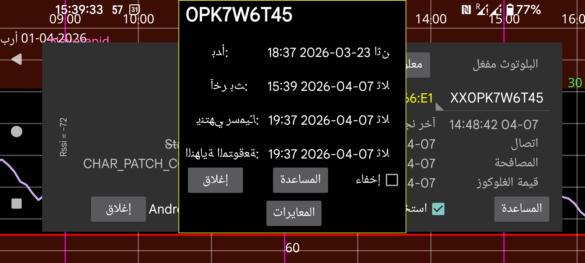

تعرض وقت بدء المستشعر، وآخر قيمة بث، وآخر مسح، ووقتَي الانتهاء المتوقع والرسمي للمستشعر.
فترة التهيئة: في مستشعرات Sibionics وAidex X يمكنك تغيير عدد دقائق فترة التهيئة. ستتجاهل جميع الوظائف البيانات خلال فترة التهيئة: المنحنى على الشاشة، والإحصاءات، والبيانات المُصدَّرة، والبيانات الظاهرة في خادم الويب. وينطبق ذلك أيضًا بأثر رجعي.
إخفاء: عند تحديد هذا الخيار يُخفى المنحنى. وإلى جانب إلغاء التحديد، يمكنك أيضًا جعل المنحنى ظاهرًا مرة أخرى بالضغط على «إظهار» أسفل يمين الشاشة.
المعايرات: إذا كنت قد حددت تسمية سكر الدم في القائمة اليسرى←الإعدادات←المعايرة، وأدخلت قياسات سكر الدم من خلال القائمة الوسطى اليسرى←كمية جديدة، ولم تكن هذه القياسات مستبعَدة، فيمكنك الضغط على زر «المعايرات» للحصول على قائمة بالمعايرات التي أُجريت. انظر: https://www.juggluco.nl/Juggluco/index.html#calibration
تفعيل: بالنسبة إلى المستشعرات المنتهية، يظهر زر «تفعيل». بالضغط على هذا الزر يمكنك استخدام المستشعر مرة أخرى من دون مسح مصفوفة البيانات الموجودة على العبوة. يمكنك أيضًا استخدامه مع مستشعرات Libre 2 وLibre 3، ولكن إذا كنت قد مسحت المستشعر بواسطة Juggluco على هاتف آخر، فستحتاج دائمًا إلى مسح المستشعر مرة أخرى عبر NFC لاستعادة المستشعر.